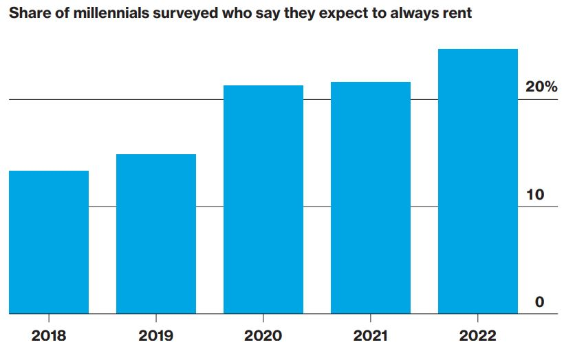
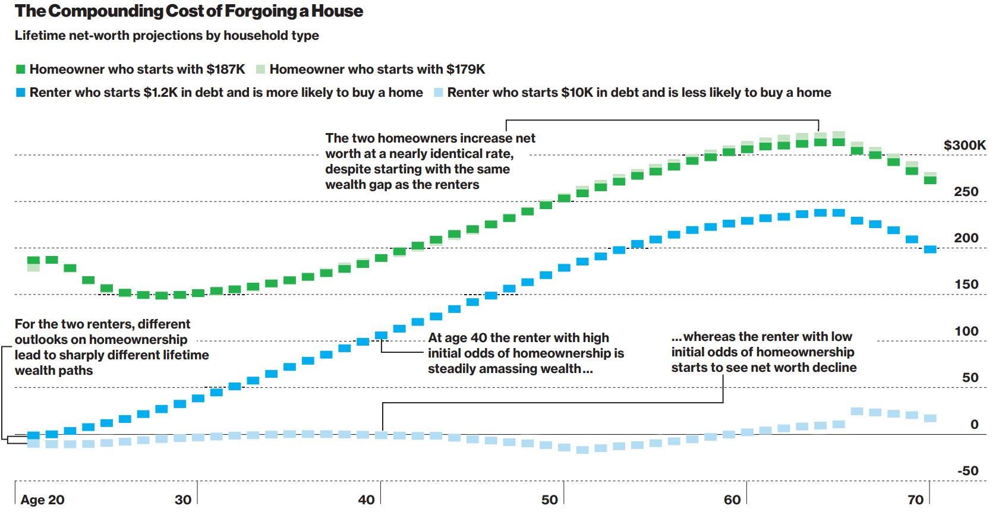
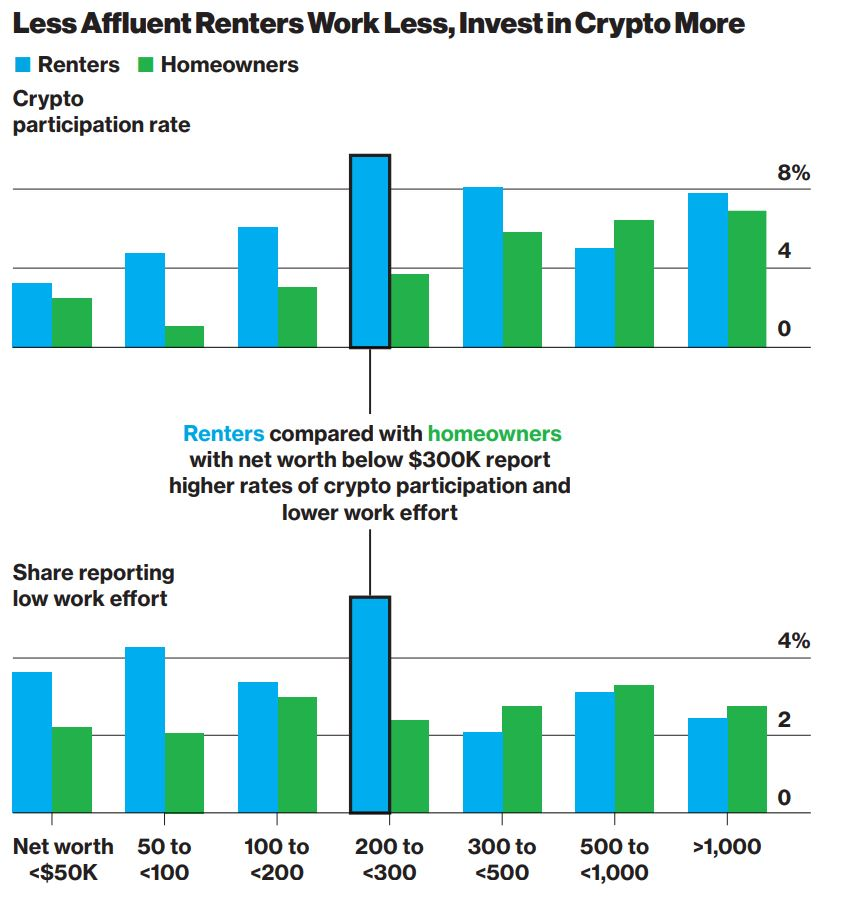

Homeownership in the United States has long represented stability, wealth-building, and a central pillar of the American dream. But as housing prices continue to outpace wage growth, that aspiration is slipping further from reach for millions of younger Americans, with consequences that extend well beyond the housing market itself.
A Growing Affordability Crisis
The gap between home prices and incomes has widened dramatically in recent years. According to data from the Federal Reserve Bank of Atlanta, the monthly cost of owning a median-priced home now consumes a record share of median household income. Surveys show that the proportion of millennials who expect to rent permanently has nearly doubled since 2018, and a significant share of Generation Z adults believe they will never be able to afford a home they truly want.


When Hope Fades, Behavior Changes
New research by economists Younggeun Yoo and Seung Hyeong Lee at the University of Chicago examines what happens when individuals abandon the goal of homeownership. Using a mathematical model calibrated with real-world data from the Federal Reserve's Survey of Consumer Finance and other sources, they simulated household financial trajectories from age 20 to 75.
Their findings reveal a striking pattern: as the perceived likelihood of buying a home diminishes, individuals systematically shift their economic behavior. They consume more relative to their wealth, reduce their work effort, and gravitate toward riskier investments such as cryptocurrencies rather than traditional savings vehicles.
The divergence emerges early. A young renter who still sees homeownership as attainable saves diligently and builds wealth over time. A discouraged renter on a similar income path accumulates virtually no assets over decades, living largely paycheck to paycheck.
The Generational Wealth Divide
The model estimates that roughly 84 percent of Americans born in 1950 will purchase a home during their working life, closely matching census data. But for those born in 1990, the projected homeownership rate drops to just 74 percent. This gap carries compounding consequences: homeowners build equity and credit history, while permanent renters often see their net worth stagnate or decline over time.
The researchers also found that among less affluent renters, cryptocurrency participation is notably higher than among homeowners with comparable wealth levels, suggesting that some may be turning to speculative investments as a substitute path to financial security. Similarly, renters with lower net worth report reduced work effort at higher rates than their homeowning counterparts.
Broader Economic Consequences
The implications extend beyond individual households. When a significant share of young adults disengage from the savings-and-investment cycle that homeownership traditionally anchors, the effects ripple through the broader economy. Reduced labor supply, lower income tax contributions, and diminished productive capacity represent real costs that are ultimately shared across society.


Policy Responses and the Window for Action
To address the affordability crisis, the Trump administration has proposed a $200 billion mortgage bond stimulus aimed at lowering lending rates, while both parties have pursued regulatory reforms to boost housing supply. The researchers note that targeted cash subsidies for prospective homebuyers can be effective, but timing is critical. Interventions that reach households before they abandon the goal of ownership produce far better outcomes than those that arrive after hope has already faded.
If policymakers act too late, after young people have progressed too far down the path of futility, it may become impossible to put them back on track.
Looking Ahead
The housing affordability crisis is not merely a question of who can buy a home. It is reshaping savings behavior, work incentives, and investment patterns across an entire generation. Understanding these downstream effects is essential for designing policies that address not only the supply and cost of housing, but also the behavioral shifts that emerge when a fundamental economic aspiration becomes unattainable.
Source: Bloomberg Businessweek, March 2026. "Giving Up on Homeownership Can Hurt You in the Long Run" by Younggeun Yoo and Seung Hyeong Lee. Graphics by Mathieu Benhamou and Jeremy C.F. Lin.